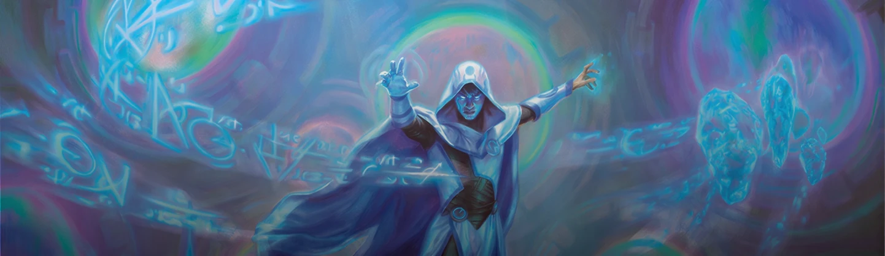
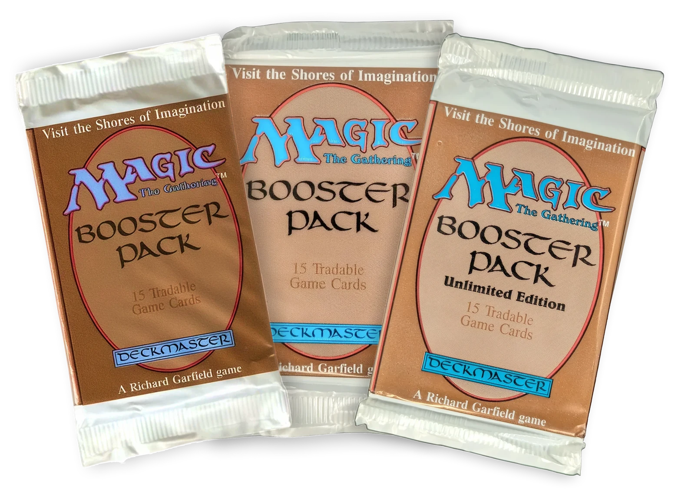

La Storia
Le Origini: l'intuizione di Richard Garfield
La storia di Magic: The Gathering inizia nel 1991, quando un giovane matematico di nome Richard Garfield presentò un prototipo di gioco di carte alla Wizards of the Coast, una piccola casa editrice di Seattle. L'idea era rivoluzionaria: un gioco di carte in cui ogni giocatore potesse costruire il proprio mazzo unico, acquistando bustine dal contenuto casuale. Nulla di simile era mai stato tentato prima.
Il 5 agosto 1993, Magic: The Gathering venne ufficialmente pubblicato con il set chiamato "Alpha", composto da 295 carte. Il successo fu immediato e travolgente: la prima tiratura andò esaurita nel giro di poche settimane, costringendo la Wizards of the Coast a ristampare immediatamente una seconda edizione, la "Beta", seguita poco dopo dalla "Unlimited".

L'Esplosione degli Anni '90
Tra il 1993 e il 1999, Magic conobbe una crescita esponenziale. Le prime espansioni — Arabian Nights, Antiquities e Legends — introdussero nuove meccaniche e ambientazioni, ampliando enormemente le possibilità strategiche del gioco. In questo periodo nacquero alcune delle carte più iconiche e ricercate della storia, tra cui le leggendarie "Power Nine" (Black Lotus, Ancestral Recall, Time Walk e le altre), oggi valutate decine di migliaia di dollari.
Nel 1996 venne organizzato il primo Pro Tour ufficiale a New York, segnando l'inizio della scena competitiva professionistica. Magic non era più solo un passatempo tra amici: era diventato uno sport mentale con tornei mondiali, premi in denaro e giocatori professionisti.

Il Nuovo Millennio e la Maturità
Con l'arrivo del 2000, Magic attraversò un periodo di profonda evoluzione. L'introduzione del sistema di "blocchi" (un set base accompagnato da due espansioni) portò una struttura narrativa e meccanica più coerente. Set memorabili come Invasion, Mirrodin e Ravnica ridefinirono il modo di giocare e di costruire mazzi, introducendo meccaniche ancora oggi amate dalla community.
Nel 2002 venne lanciato Magic Online, la prima piattaforma digitale ufficiale che permise ai giocatori di tutto il mondo di sfidarsi in rete. Questo segnò un passo fondamentale nell'espansione globale del gioco, raggiungendo milioni di nuovi appassionati.

L'Era Moderna: Arena e le Collaborazioni
Il 2018 rappresenta un altro punto di svolta con il lancio di Magic: The Gathering Arena, un client free-to-play che rese il gioco accessibile a una nuova generazione di giocatori grazie a una grafica moderna e un'esperienza digitale fluida. Arena contribuì in modo decisivo a far riscoprire Magic a milioni di persone in tutto il mondo.
Negli ultimi anni, la Wizards of the Coast ha rivoluzionato anche la strategia editoriale, dando il via a collaborazioni crossover senza precedenti: dal Signore degli Anelli a Dungeons & Dragons, da Assassin's Creed a Final Fantasy, fino alle recenti espansioni a tema Lo Hobbit e Avatar. Queste partnership hanno portato Magic oltre i confini del suo universo originale, attirando fan da ogni angolo della cultura pop.

Magic Oggi: più di 30 anni di magia
A oltre trent'anni dalla sua creazione, Magic: The Gathering rimane il gioco di carte collezionabili più giocato e influente al mondo. Con oltre 27.000 carte stampate, più di 50 milioni di giocatori attivi e una community globale appassionata e in continua crescita, il gioco ideato da Richard Garfield continua a reinventarsi mantenendo intatta la sua essenza: strategia, collezionismo e l'emozione di ogni partita.